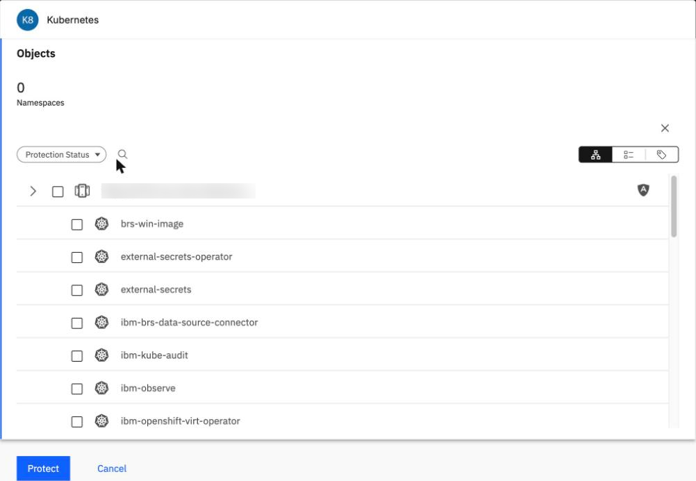
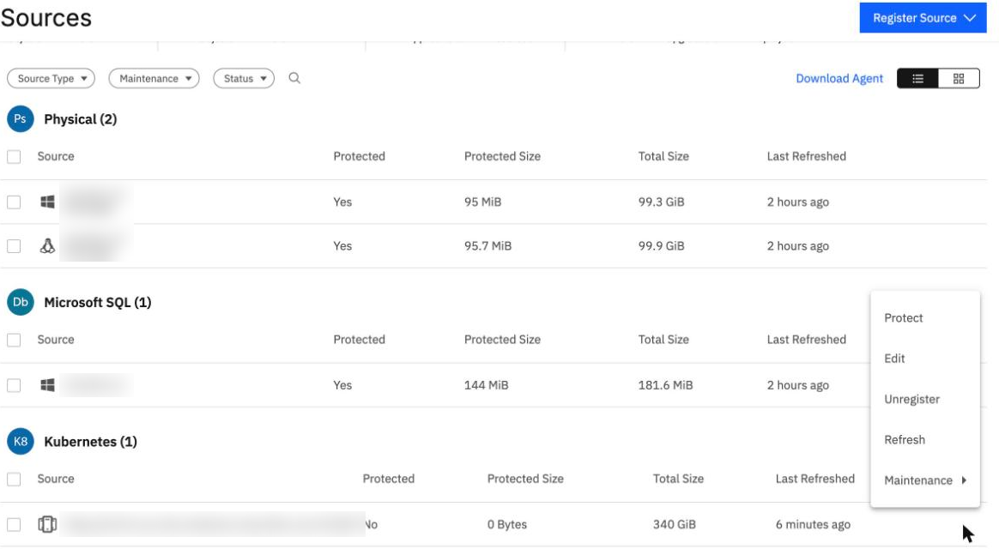
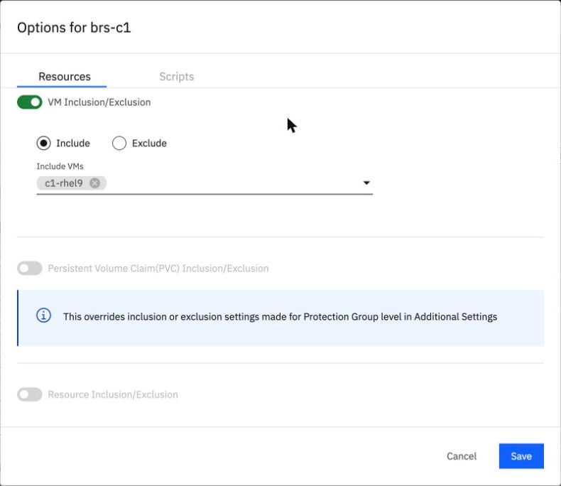
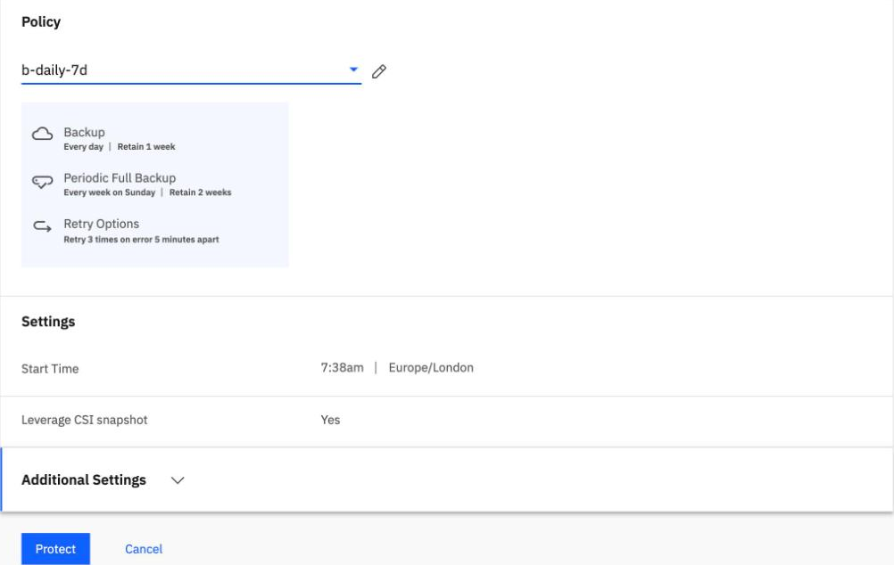
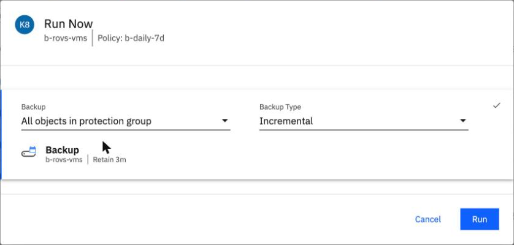

Back up a VM
By the end of this unit you'll be able to find a VM in the console and back it up, say what BRS does on the cluster, and predict what a second backup reads.
Northgate Freight is a made-up haulier. Its ROVS cluster, ng-cluster-01, is registered. Now it backs up VMs in a namespace, first by hand.
OpenShift Virtualization VM backup wasn't generally available when we tested it. IBM lists it for the AU-SYD region only. Its pages call it "intended for testing and proof-of-concept scenarios in the AU-SYD region", and they still said so when we read them. Names were changed. Every number and screen comes from real runs in our lab. Some screens show lab object names, such as the group b-rovs-vms, and cluster names are blurred.
What BRS does on the cluster during a backup
BRS protects a namespace and picks the VMs inside it. This is what our lab saw on the cluster during the first run.
Does BRS use the cluster's own OADP operator for this?
Show the answer
No. In our lab nothing was created in openshift-adp, and BRS made no change to any operator, CRD or snapshot class over the whole test. The job pods only run sleep and hold the clones as raw block devices.
Are the VMs stopped while they are backed up?
Show the answer
No, they kept running. The snapshots were taken in the first 3 minutes of the first run, and the run records the indications GuestAgent, Online.
Find the VM and run the group
These screens come from the BRS console in our lab: one cluster, one VM. Click where you'd click. After two misses, the right place is marked.

Northgate made the namespace brs-c1 after it registered the cluster. Click where it should be listed.
Show where
It isn't there. A namespace made after the registration isn't listed until you refresh the source. Close the form and do that first.

You are in Sources, on the Kubernetes source's menu. Which item makes BRS list the new namespace?
Show where
Right. Refresh. In our lab brs-c1 was listed after it. With the command line in the first lab run, the refresh call took 62 s.

A namespace may hold many VMs. Where do you choose the one VM to protect?
Show where
Right. Switch on VM Inclusion/Exclusion, choose Include and pick the VM under Include VMs. Without this the group protects the whole namespace.

Leverage CSI snapshot is Yes. Where do you open the setting that pauses future runs?
Show where
Right. Additional Settings. We switched on Pause Future Runs there, so that only runs started by hand happen.

Run Now says how long the backup will be kept. Click that line.
Show where
Right. Retain 3m, not the policy's one week. We didn't check the run's real expiry date. Backup Type starts at Incremental.
How much does the second run read?
Northgate's backup admin backs up two VMs with four disks, 120 GiB in all. Then they rewrite 2 of the 20 data files on each VM in place: 2 GiB of 20 GiB, 10% of the data. They run the group again. The first run recorded:
Run Read Sent Time First 128.86 GB 45.13 GB 2,443 s Second ? ? ?
How much does the second run read?
Show the answer
128.86 GB, the same.The incremental doesn't read only the changes. It read every disk in full again.
Run Read Sent Time First 128.86 GB 45.13 GB 2,443 s Second 128.86 GB 5.50 GB 1,357 s
In the console, with one VM in the same region, the same thing happened: the first run read 64.43 GB and so did the second, in 439 s and 407 s. The VMs differ, so the two tests aren't like for like.
What did the second run save?
Show the answer
The data sent, and some of the time. The data sent fell from 45.13 GB to 5.50 GB, and the time from 2,443 s to 1,357 s. We put the fall in the data sent down to deduplication. In the console run the data sent fell from 22.88 GB to 2.82 GB.
Watch for this. In unit 3.2 a file-based incremental read 3.2 MB against 97.1 MB. A VM incremental in our lab read every disk in full on both days we tested, so plan a VM's backup window on the full size of its disks.
Check the VM after a backup
The run status alone doesn't tell you the VM is fine. After run 1 in the console, Northgate's test VM wouldn't run basic commands: head, diff and sudo failed with "Exec format error". The data disk was fine, and 20 of 20 files matched the saved manifest.
What cured it?
Show the answer
A restart. Stopping and starting the VM (virtctl stop, then virtctl start) at 08:55 UTC cured it, and the disk image itself was intact. During the backup's snapshot, ceph-csi flattened the shared RHEL 9 boot-source image that the VM's root disk was cloned from, and the node still pointed at the old parent. A test without BRS made the same flatten happen, but the VM's files didn't read as zeros, so we don't know the cause for sure. After run 2 no files read as zeros.
How can you check a VM after a backup?
Show the answer
Count the zero-byte files. A short script shows it, and these are its recorded results:
after run 1: zero=1086 nonzero=648 after the restart: zero=0 nonzero=1734 after run 2: zero=0 nonzero=1734
Watch for this. In our lab this happened once, to one VM, after run 1, on about 1,086 of 1,734 program and library files. We don't know the cause for sure.
Three questions
A namespace is made after the cluster is registered. It isn't in the Protect list. What do you do?
Show the answer
Refresh the source. In our lab the namespace was listed after Refresh in the source's menu.
Review from unit 3.2. In unit 3.2 a file-based incremental read 3.2 MB against 97.1 MB for the first run. What did the incremental of a VM read, against its first run?
Show the answer
The same. In our lab it read 128.86 GB both times in one test, and 64.43 GB both times in the other.
You protect a namespace and leave VM Inclusion/Exclusion off. What does the group protect?
Show the answer
The whole namespace. Without the inclusion setting, the group protects every VM in it.
You can back up a VM
Refresh the source so a new namespace is listed, then pick the VM with VM Inclusion/Exclusion. The VMs keep running during the backup. The second run read every disk in full again: 128.86 GB both times in one test, and 64.43 GB both times in the other. What fell was the data sent. After a backup, check the VM. Once, a VM's program files read as zeros after a backup, and restarting the VM cured it. VM backup wasn't generally available when we tested it, and IBM lists it for au-syd only.